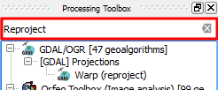

In the
Processing toolbox
, do:
Type
Reproject
in the
Search...
field to find the
Reproject layer
algorithm.

Double-click on the
Reproject layer
entry to open its dialog.
Once you have finished, click
Next step
.